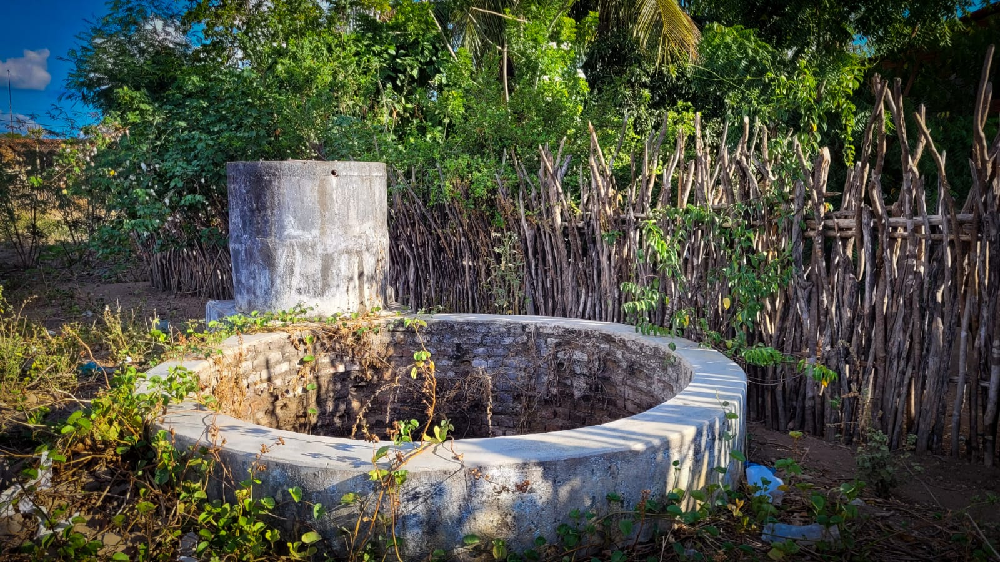
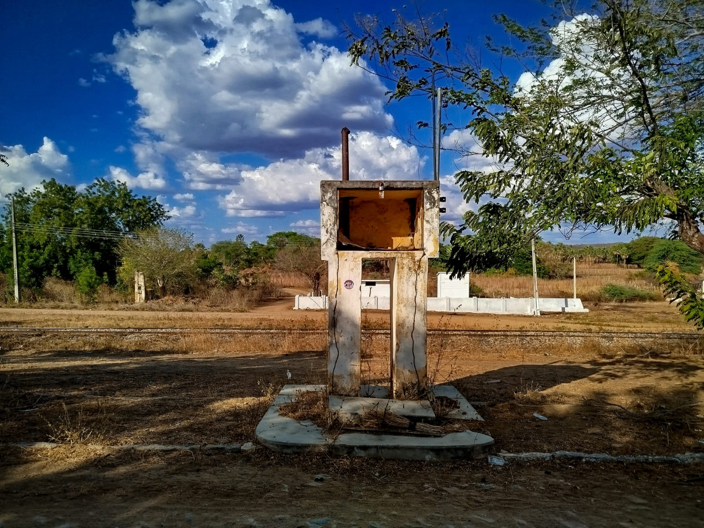
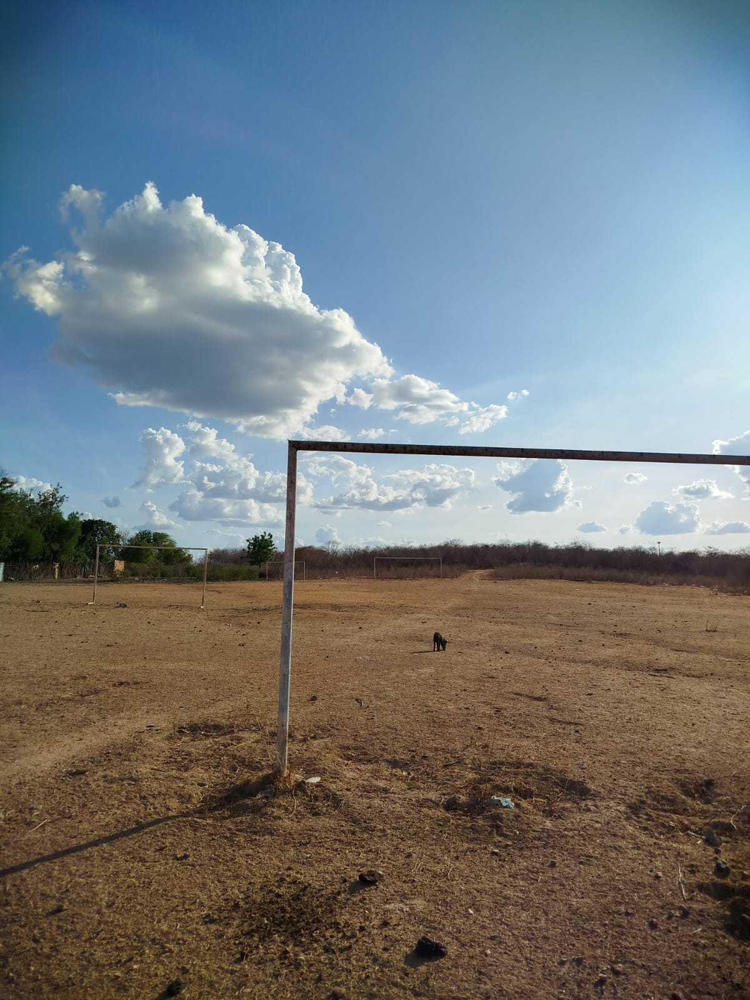

Emerson da Silva Marques
Relato do autor sobre as fotos. Aqui você pode escrever o contexto, impressões ou histórias relacionadas às imagens. O texto pode descrever o ambiente, as pessoas retratadas, as memórias ou o significado cultural das fotografias.